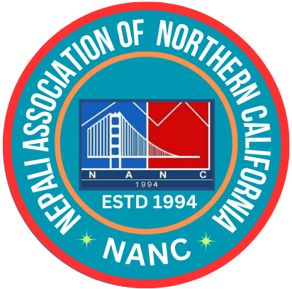

Language should never stand between you and the help you need.भाषा तपाईं र तपाईंलाई चाहिने सहयोगबीच कहिल्यै बाधा बन्नु हुँदैन।
The Language Equity & Access Project helps Nepali-speaking residents get health care, county services and civic information in a language they understand, through a community survey, Nepali translations, English classes and practical workshops.
भाषिक समानता तथा पहुँच परियोजनाले नेपाली भाषी बासिन्दाहरूलाई आफूले बुझ्ने भाषामा स्वास्थ्य सेवा, काउन्टी सेवा र नागरिक जानकारी पाउन सहयोग गर्छ: सामुदायिक सर्वेक्षण, नेपाली अनुवाद, अंग्रेजी कक्षा र व्यावहारिक कार्यशालामार्फत।

Nepali Association of Northern California
Serving the community since 1994
नेपाली एसोसिएसन अफ नर्दर्न क्यालिफोर्निया
सन् १९९४ देखि समुदायको सेवामा
Why this project mattersयो परियोजना किन आवश्यक छ
Many Nepali-speaking families in West Contra Costa County struggle to use services that are meant for everyone, simply because of language.
पश्चिम कन्ट्रा कोस्टा काउन्टीका धेरै नेपाली भाषी परिवारहरूले सबैका लागि बनाइएका सेवा पनि भाषाकै कारण प्रयोग गर्न कठिनाइ भोगिरहेका छन्।
Information only in Englishजानकारी अंग्रेजीमा मात्र
Forms, letters, websites and emergency alerts are rarely available in Nepali.
फाराम, पत्र, वेबसाइट र आपत्कालीन सूचना विरलै नेपालीमा उपलब्ध हुन्छन्।
Too few qualified interpretersयोग्य दोभाषेको कमी
At the doctor, the DMV or a county office, a Nepali interpreter is often not available.
डाक्टरकहाँ, DMV मा वा काउन्टी कार्यालयमा प्रायः नेपाली दोभाषे उपलब्ध हुँदैनन्।
Children translating for parentsअभिभावकका लागि बालबालिकाले अनुवाद
Families rely on children and relatives to translate, even for medical and legal matters.
स्वास्थ्य र कानुनी विषयमा समेत परिवारहरू अनुवादका लागि बालबालिका र आफन्तमा भर पर्छन्।
The result is missed care, missed benefits, and less say in local decisions. This project starts by listening to the community, then acts on what we learn.
यसको परिणाम: उपचार छुट्छ, सुविधा पाइँदैन, र स्थानीय निर्णयमा समुदायको आवाज कम हुन्छ। यो परियोजना पहिले समुदायको कुरा सुन्छ, अनि त्यसैका आधारमा काम गर्छ।
Nepali-speaking residents of West Contra Costa Countyपश्चिम कन्ट्रा कोस्टा काउन्टीका नेपाली भाषी बासिन्दा
We focus on people who face the biggest barriers and who do not always reach formal services.
हामी सबैभन्दा बढी बाधा भोग्ने र औपचारिक सेवासम्म सधैँ नपुग्ने व्यक्तिहरूमा केन्द्रित छौँ।
Whereकहाँ
Contra Costa County District 1 and West County communities, including Richmond, San Pablo, El Sobrante, North Richmond, El Cerrito, Pinole, Hercules, Rodeo and Crockett.
कन्ट्रा कोस्टा काउन्टी जिल्ला १ र पश्चिम काउन्टीका समुदायहरू: रिचमन्ड, सान पाब्लो, एल सोब्रान्टे, नर्थ रिचमन्ड, एल सेरिटो, पिनोल, हर्क्युलिस, रोडियो र क्रोकेट लगायत।
Main areasमुख्य क्षेत्र
Health care, social services, transportation and driver licensing, citizenship and civic participation, county services, emergency information and digital access.
स्वास्थ्य सेवा, सामाजिक सेवा, यातायात र सवारी चालक अनुमतिपत्र, नागरिकता र नागरिक सहभागिता, काउन्टी सेवा, आपत्कालीन जानकारी र डिजिटल पहुँच।
Four connected activitiesचार आपसमा जोडिएका गतिविधि
Community needs assessmentसामुदायिक आवश्यकता मूल्याङ्कन
A bilingual survey and focus groups to find where language barriers hurt most.
भाषाको बाधा सबैभन्दा बढी कहाँ छ भनी पत्ता लगाउन दुई भाषाको सर्वेक्षण र केन्द्रित समूह छलफल।
Learn more →थप जान्नुहोस् → 2Nepali translationsनेपाली अनुवाद
20 important materials in Nepali, starting with DMV and citizenship practice questions.
२० महत्त्वपूर्ण सामग्री नेपालीमा, DMV र नागरिकता परीक्षाका अभ्यास प्रश्नबाट सुरु गरेर।
Learn more →थप जान्नुहोस् → 3English classes and workshopsअंग्रेजी कक्षा र कार्यशाला
Everyday English for real situations, plus sessions with experts from our community.
वास्तविक परिस्थितिका लागि दैनिक अंग्रेजी, साथै समुदायका विज्ञहरूसँग सत्र।
Learn more →थप जान्नुहोस् → 4Outreach and sharingजनसम्पर्क र प्रचार
Bringing resources to people through events, WhatsApp, Facebook and trusted messengers.
कार्यक्रम, WhatsApp, Facebook र विश्वासिला सन्देशवाहकमार्फत स्रोत सामग्री समुदायसम्म पुर्याउने।
Learn more →थप जान्नुहोस् →Our goalsहाम्रा लक्ष्य
Project timeline at a glanceपरियोजना समयरेखा संक्षेपमा
- July – November 2026जुलाई – नोभेम्बर २०२६
Community survey, three focus groups and the needs assessment report.
सामुदायिक सर्वेक्षण, तीन केन्द्रित समूह छलफल र आवश्यकता मूल्याङ्कन प्रतिवेदन।
- July 2026 – August 2027जुलाई २०२६ – अगस्ट २०२७
Translation of 20 priority materials into Nepali, published in batches.
२० प्राथमिक सामग्रीको नेपाली अनुवाद, चरणबद्ध रूपमा प्रकाशन।
- Fall 2026 – Summer 2027शरद २०२६ – ग्रीष्म २०२७
English classes and practical workshops with community experts.
अंग्रेजी कक्षा र समुदायका विज्ञहरूसँग व्यावहारिक कार्यशाला।
Funded by Contra Costa Countyकन्ट्रा कोस्टा काउन्टीको आर्थिक सहयोग
This project is funded by Contra Costa County through the West Contra Costa Community Impact Fund, and supports the County’s Language Equity and Access Plan.
यो परियोजनालाई कन्ट्रा कोस्टा काउन्टीले पश्चिम कन्ट्रा कोस्टा सामुदायिक प्रभाव कोष (West Contra Costa Community Impact Fund) मार्फत आर्थिक सहयोग गरेको छ, र यसले काउन्टीको भाषिक समानता तथा पहुँच योजनालाई सघाउँछ।
Who runs itकसले सञ्चालन गर्छ
The Nepali Association of Northern California (NANC), a community organization serving Nepali families since 1994, working with community partners including CERI.
सन् १९९४ देखि नेपाली परिवारहरूको सेवा गर्दै आएको सामुदायिक संस्था नेपाली एसोसिएसन अफ नर्दर्न क्यालिफोर्निया (NANC), CERI लगायत सामुदायिक साझेदारहरूसँग मिलेर।
More about the sponsor and partnersप्रायोजक र साझेदारबारे थपShare your experience in the community surveyसामुदायिक सर्वेक्षणमा आफ्नो अनुभव बताउनुहोस्
About 15 minutes, in Nepali or English. Your name is not required and results are only shared as totals.
करिब १५ मिनेट, नेपाली वा अंग्रेजीमा। नाम दिनु अनिवार्य छैन र नतिजा समग्र रूपमा मात्र प्रस्तुत गरिन्छ।